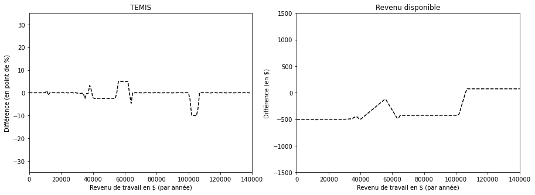
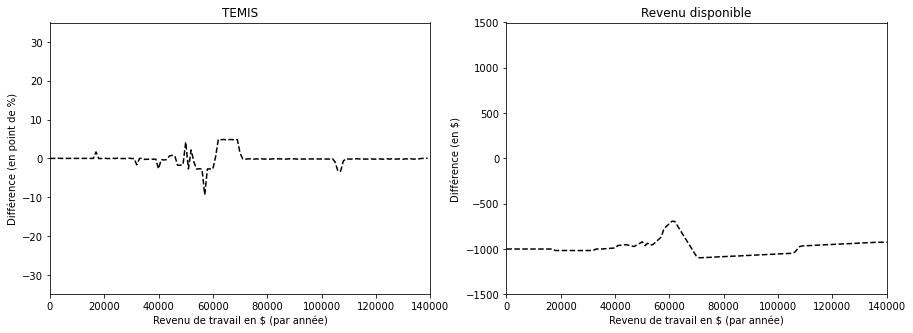

Comparaisons avec le MFQ
Cette section compare brièvement les résultats du SRD avec ceux du simulateur de revenu disponible du ministère des Finances du Québec (MFQ) . L’objectif poursuivi est de démontrer que le SRD est en mesure de produire des résultats comparables à ceux du MFQ.
Deux indicateurs sont utilisés pour cette comparaison. Le premier est le revenu disponible, qui est défini comme le revenu total (incluant les transferts directs gouvernementaux) après soustraction des cotisations salariales et de l’impôt sur le revenu, et ajout des transferts sociaux. Le deuxième indicateur est le taux effectif marginal d’imposition (TEMI), qui est une mesure du taux de charge fiscale sur un revenu supplémentaire, soit le taux qui s’applique à la dernière tranche de revenu imposable obtenu par un particulier (nous procedons par tranche de 1 000 $).
De manière générale, les résultats obtenus par le SRD sont très similaires à ceux du MFQ. Notons que lors de la modélisation, nous avons choisi d’intégrer le premier crédit d’impôt attribuant un montant ponctuel (de 500$) pour pallier à la hausse du coût de la vie en 2021, à la différence du MFQ qui a intégré les deux crédits relatif à la hausse du cout de vie en 2022. Ce choix donne lieu à une différence de 500$ à 1000$ dépendant de la situation du ménage (célibataire ou couple). En outre, d’autres légères différences sont observables. Celles-ci sont principalement dues aux éléments suivants:
les résultats du MFQ tiennent compte du changement d’année de base en juillet pour le calcul du crédit d’impôt de la TPS, alors que le SRD ne considère qu’une seule année de base pour une même année fiscale;
l’aide sociale n’est pas incluse dans le revenu familial lors du calcul de la prime au travail, puisque le montant de l’aide sociale est calculé après la prime au travail;
on observe une légère différence (positive) pour la contribution au régime public d’assurance médicaments pour les 65 ans et plus.
Dix cas-types sont présentés ci-dessous afin de dresser un portrait général de la situation. Les différences correspondent aux résultats du SRD moins ceux du MFQ. L’année fiscale 2022 a été choisie aux fins de comparaison et l’allocation logement est exclue du revenu disponible, car celle-ci n’est pas modélisée par le SRD.
Personne célibataire (sans enfant)
De 35 ans

De 63 ans
De 73 ans
Personne monoparentale
De 35 ans avec un enfant de 4 ans et des frais de garde non-subventionnés de 6825$

De 35 ans avec un enfant de 10 ans, aucun frais de garde
Couple sans enfant
Conjoints de 35 ans et répartition du revenu familial de 0-100% entre les conjoints
Conjoints de 35 ans et répartition du revenu familial de 40-60% entre les conjoints
Conjoints de 73 ans et répartition du revenu 0-100% entre les conjoints
Conjoints de 73 ans et répartition du revenu familial de 40-60% entre les conjoints

Couple avec enfant
Conjoints de 35 ans avec un enfant de 4 ans et des frais de garde non-subventionnés de 6825$ et répartition du revenu familial de 40-60% entre les conjoints
